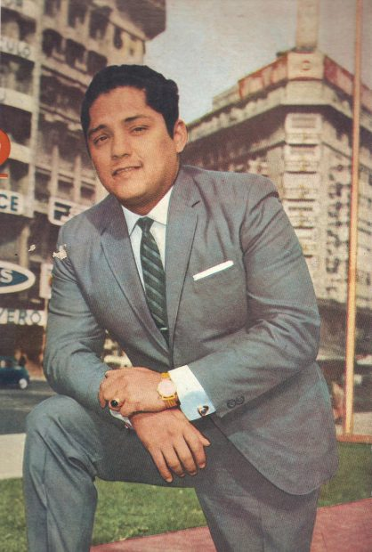
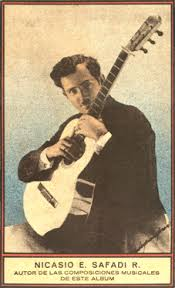
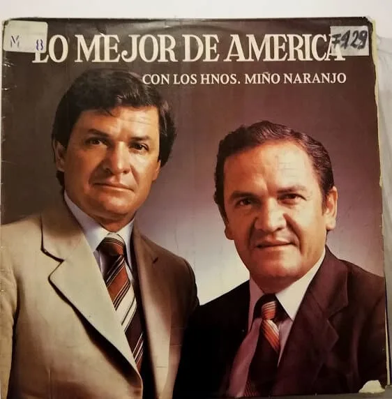
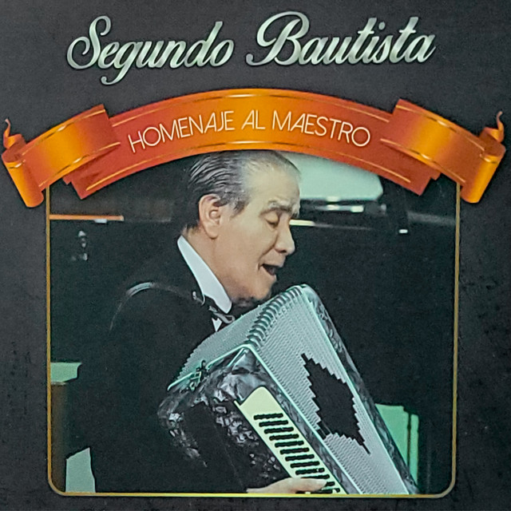

La música tradicional ecuatoriana es una mezcla de historia, identidad y sentimiento. El pasillo es conocido por su profunda melancolía; temas como “Romance de mi destino” o “Guayaquil de mis amores” son parte de la memoria colectiva. El albazo destaca por su alegría festiva, mientras que el sanjuanito resalta ritmos andinos tradicionales interpretados con rondadores, guitarras y bandolines. Estos géneros mantienen viva la esencia cultural del Ecuador.

Julio Jaramillo fue uno de los artistas más influyentes del Ecuador y de América Latina. Su voz se convirtió en un símbolo del pasillo, bolero y vals ecuatoriano. Entre sus canciones más icónicas se encuentran “Nuestro Juramento”, “Odiame” y “Cinco Centavitos”. Su legado continúa inspirando a generaciones y es considerado un tesoro cultural del país.

Nicasio Safadi, integrante del dúo “Ecuador” junto a Enrique Ibáñez Mora, es una de las figuras más emblemáticas en la historia del pasillo ecuatoriano. Sus composiciones y arreglos marcaron una época dorada en la música del país. Entre sus obras más reconocidas destacan “Guayaquil de mis amores”, “Fatalidad” y “Lágrimas y Pesares”, canciones que permanecen vivas en la memoria colectiva del Ecuador.

Los Hermanos Miño Naranjo son reconocidos por su gran aporte al sanjuanito, al albazo y al capishca, ritmos tradicionales de la Sierra ecuatoriana. Con más de 60 años de trayectoria, dejaron un legado musical inmenso con temas como “El Cóndor Pasa” (versión ecuatoriana), “Fiesta de mi Tierra” y “Sanjuanito del Alma”. Su música sigue siendo esencial en festividades, desfiles y celebraciones populares.

Segundo Bautista es uno de los compositores ecuatorianos más prolíficos, creador de melodías profundas que han trascendido generaciones. Sus pasillos y albazos han sido interpretados por cientos de artistas, convirtiéndose en parte esencial del repertorio tradicional. Entre sus obras más destacadas están “Sombras”, “Nieblas” y “Lágrimas de Amor”, piezas que reflejan la sensibilidad y el sentimiento característico de la música del Ecuador.